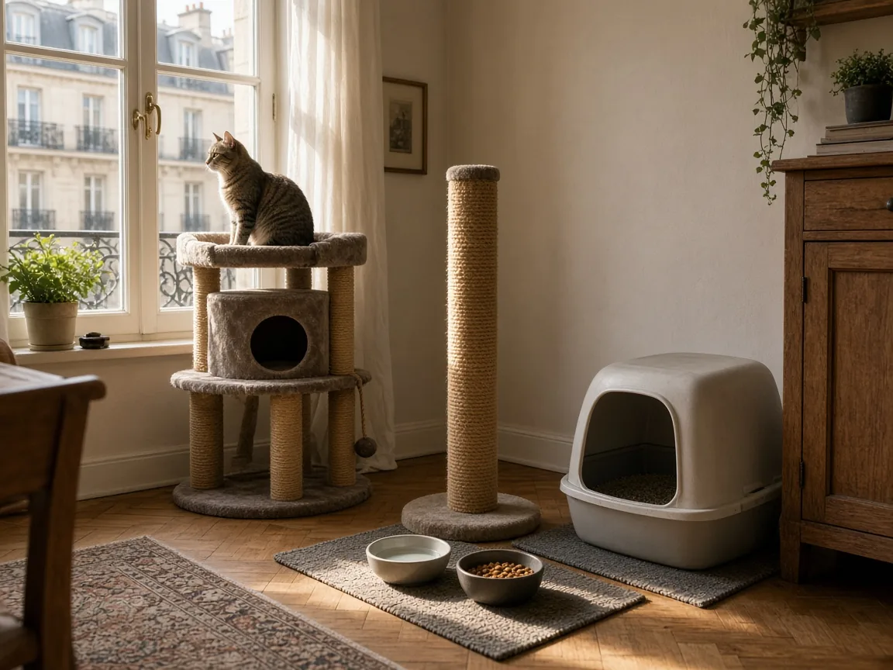

Équipement chat d’appartement : la checklist complète (2026)

Un chat qui ne sort pas vit tout entier dans ton logement : c’est donc à toi de lui offrir de quoi grimper, griffer, se cacher, boire, manger et faire ses besoins dans de bonnes conditions. Cette checklist de l’équipement pour chat d’appartement fait le tri entre l’indispensable (à avoir dès le premier jour), l’utile (à ajouter quand le chat a pris ses marques) et le superflu. Les objets connectés arrivent en dernier, seulement s’ils règlent un vrai problème. Nous n’affichons pas de prix : ils changent souvent, vérifie-les sur la page du vendeur.
La checklist en un tableau
| Équipement | Niveau | Pourquoi en appartement |
|---|---|---|
| Bac à litière + litière + pelle | Indispensable | Premier jour, avant même l’arrivée du chat |
| Gamelles eau et nourriture | Indispensable | Idéalement séparées, loin de la litière |
| Griffoir | Indispensable | Protège canapé et murs, besoin naturel du chat |
| Arbre à chat ou espaces en hauteur | Indispensable | Compense l’absence d’extérieur, observe et se repose en hauteur |
| Caisse de transport | Indispensable | Vétérinaire, déménagement, urgence |
| Couchage / cachettes | Indispensable | Un chat a besoin d’endroits pour se retirer |
| Jouets interactifs (canne à pêche…) | Indispensable | Seule façon de « chasser » en intérieur |
| Brosse, coupe-griffes | Utile | Selon le pelage et l’usure naturelle des griffes |
| Filet de balcon / sécurité fenêtres | Indispensable si balcon ou fenêtres ouvertes | Prévient chutes et fugues |
| Fontaine à eau | Utile | Incite beaucoup de chats à boire davantage |
| Distributeur programmable | Utile selon tes horaires | Repas réguliers quand tu rentres tard |
| Litière automatique | Confort (gros budget) | Odeurs dans un petit logement |
| Caméra, GPS | Selon situation | Absences longues, chat qui peut s’échapper |
Arbre à chat et griffoir : la base d’un chat d’intérieur
En appartement, l’espace au sol est limité : il faut donc donner au chat de la hauteur. Un arbre à chat stable, des étagères murales ou le haut d’un meuble dégagé lui permettent d’observer, de se reposer et d’éviter les conflits avec un autre animal. Le griffoir est tout aussi important : griffer est un besoin (entretien des griffes, marquage, étirement), pas un caprice.
- Stabilité avant tout : un arbre qui vacille sera boudé. Préfère une base large, ou une fixation au mur pour les modèles hauts.
- Placement : près d’une fenêtre (le chat aime regarder dehors) et dans une pièce de vie, pas isolé dans une chambre fermée.
- Griffoirs variés : vertical (poteau en sisal) et horizontal (carton), placés là où le chat griffe déjà : souvent près de son couchage et de l’entrée.
Arbres à chat pour appartement
Cherche un modèle adapté à la hauteur sous plafond et au gabarit de ton chat, avec plateformes larges et poteaux en sisal.
Voir sur Amazon : arbres à chatGriffoirs
Un poteau vertical assez haut pour que le chat s’étire complètement, et un griffoir carton au sol en complément.
Voir sur Amazon : griffoirsCouchage et transport
Le chat choisit souvent son propre coin pour dormir : un panier, un coussin sur une plateforme de l’arbre ou un simple carton peuvent convenir. Prévois au moins une cachette (niche, igloo, dessous de lit accessible) où il peut se retirer, surtout dans les premiers jours ou si tu reçois du monde.
La caisse de transport est indispensable dès le départ, ne serait-ce que pour la première visite chez le vétérinaire. Un modèle rigide qui s’ouvre aussi par le dessus facilite l’examen et la mise en caisse. Laisse-la ouverte dans le logement avec un plaid : le chat l’associera à un lieu familier plutôt qu’au vétérinaire.
Caisses de transport
Privilégie une caisse rigide, bien ventilée, avec ouverture par le dessus et fermeture sûre.
Voir sur Amazon : caisses de transportEau et nourriture : gamelles, fontaine, distributeur
Gamelles en inox ou céramique, faciles à laver, larges et peu profondes pour ne pas gêner les moustaches. Place l’eau à l’écart de la nourriture et toujours loin de la litière. Beaucoup de chats nourris aux croquettes boivent peu : c’est là qu’une fontaine à eau devient intéressante. Si tu as des horaires irréguliers, un distributeur programmable assure des repas à heure fixe.
Gamelles
Inox ou céramique, plates et stables. Une gamelle surélevée peut convenir à certains chats.
Voir sur Amazon : gamellesQuand passer au connecté : fontaine et distributeur
Une fontaine simple suffit pour commencer ; la version connectée ajoute des alertes de niveau d’eau. Pour le distributeur, exige une alimentation de secours et un programme qui fonctionne sans Wi-Fi. Détails dans nos guides fontaine à eau et distributeur de croquettes connecté.
Voir sur Amazon : fontainesLitière : bac classique d’abord
Pour démarrer, un bac classique (ouvert ou couvert selon les préférences du chat) assez grand pour qu’il s’y retourne, une litière qu’il accepte et une pelle suffisent. Place-le dans un endroit calme, accessible en permanence et aéré (salle de bain, entrée), loin des gamelles. Ramasse chaque jour : un bac sale est l’une des causes fréquentes de malpropreté.
La litière automatique vient plus tard, pour un chat adulte bien installé, si les odeurs posent problème dans un petit logement. Mesure l’emplacement avant d’acheter et garde l’ancien bac pendant la transition. Voir notre guide litière automatique chat appartement.
Bacs à litière
Choisis un bac assez grand pour le gabarit adulte de ton chat ; le couvercle limite les projections mais certains chats le refusent.
Voir sur Amazon : bacs à litièreSécurité : fenêtres, balcon, identification
- Fenêtres et balcon : un chat peut tomber ou s’échapper par une fenêtre ouverte ou un balcon. Un filet de protection ou des moustiquaires renforcées sont la meilleure prévention. Méfie-toi des fenêtres oscillo-battantes, où un chat peut se coincer.
- Plantes et produits : certaines plantes d’intérieur et fleurs coupées (le lys notamment) sont toxiques pour le chat ; range produits ménagers et médicaments.
- Câbles et petits objets : élastiques, fils, ficelles peuvent être avalés.
- Identification : en France, l’identification (puce ou tatouage) est obligatoire pour les chats de plus de 7 mois nés après le 1er janvier 2012. Garde tes coordonnées à jour au fichier I-CAD.
- Traceur ou caméra : seulement si ton chat peut sortir ou si tu es souvent absent. Voir GPS chat : Tractive ou AirTag, GPS sans abonnement et notre guide caméra pour chat.
Filets de protection balcon et fenêtre
Vérifie les conditions de fixation autorisées par ton bail ou ta copropriété avant d’installer.
Voir sur Amazon : filets de protectionDans quel ordre acheter ?
- Avant l’arrivée : bac + litière + pelle, gamelles, caisse de transport, griffoir, un couchage ou une cachette, quelques jouets.
- Première semaine : arbre à chat ou espaces en hauteur, sécurisation des fenêtres et du balcon.
- Quand le chat a pris ses marques : fontaine à eau, puis distributeur si tes horaires l’exigent.
- Plus tard, si besoin réel : litière automatique, caméra, traceur. Voir notre panorama des objets connectés pour chat et notre Top 5 des équipements connectés 2026.
Pour répartir le budget par niveau, consulte notre kit débutant et budget. Pas sûr de ce dont ton chat a vraiment besoin ? Fais d’abord notre audit gratuit en 1 jour.
Indispensable ou superflu ? Les pièges à éviter
- Tout acheter d’un coup : le chat a besoin de temps pour adopter chaque nouvel objet, et ses préférences (type de litière, de couchage) se découvrent à l’usage.
- Un arbre à chat instable ou trop petit : il finit inutilisé. Mieux vaut un modèle solide qu’un modèle à multiples gadgets.
- Remplacer le jeu par des gadgets : un jouet laser automatique ne remplace pas une séance de jeu avec toi ; termine toujours par une proie que le chat peut attraper.
- Des produits trop parfumés (litière, désodorisant) : beaucoup de chats les fuient.
- Le connecté avant la base : une litière automatique ne compense pas l’absence de griffoir ou de hauteur.
- Compter sur les appareils pour une longue absence : au-delà d’un week-end, fais passer quelqu’un.
Notre avis
L’équipement d’un chat d’appartement tient d’abord en quelques basiques bien choisis : litière propre, eau et nourriture séparées, griffoir, hauteur, cachette, caisse de transport et fenêtres sécurisées. Le connecté (fontaine, distributeur, litière automatique, caméra, GPS) vient ensuite, un objet à la fois, pour répondre à un problème précis. Pour tout mettre en place dans l’ordre, suis le plan en 7 jours (produit payant).
Cette checklist ne remplace pas l’avis d’un vétérinaire. Une première visite après l’adoption permet de faire le point sur la santé, la vaccination, l’identification et l’alimentation de ton chat ; tout changement soudain d’appétit, de consommation d’eau ou de passages à la litière doit lui être signalé.
Liens affiliés Amazon : une commission peut être versée, sans surcoût pour toi.